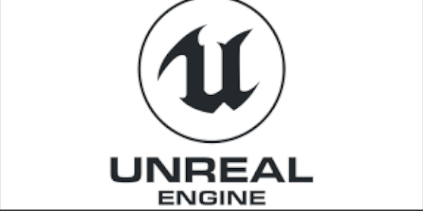
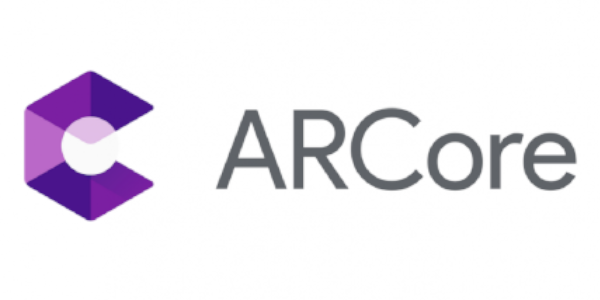

Welcome
App Development Synergies Module Weeks
Select a week from the list below and view my Contextual research, Project development and Coursework associated with it.
WEEKS 1-12
- Week 1 : Interduction
- Week 2 : Platforms and Tools
- Week 3 : App Jam
- Week 4 : Reflection
- Week 5 : Types of App
- Week 6 : Creative App Commerce
- Week 7 : Audience Research
- Week 8 : Creativity
- Week 9 : Emerging Tech
- Week 10 : Who Else is Making Apps?
- Week 11 : Project Management
- Week 12 : What Next?
Week 1
Interduction
Contextual research
My research into my project idea posted for week 1 was centred around the Unreal Engine and how to integrate AR Core features in an application. I found a QuickStart guide to ARCore at https://developers.google.com/ar/develop/unreal/quickstart and followed the guide lines provided by Goolge and the team at Unreal.
My finding where that it was simple to set up the Plugin inside the unreal environment and load a template to play around with and deploy to my testing device. The setup for mobile inside Unreal was a straightforward setup and deployment to mobile was easy and quick.
There have been huge improvements in deployment times in the last two releases of the unreal engine. Packaging and deployment have been a huge focus for Epic following the success of Fortnite on mobile and they have started integrating the technology used to optimize and deploy for mobile into the engine and huge feature updates and improvements on mobile is showing.
I choose to run the application on Vulkan due to the strides made in frame rates and rendering by the open source 3D graphics and computing API. I tried to run my AR core with Vulkan and hit my first barrier in my application design. Vulkan does not support AR rendering as of yet.
I’m am going to use the ASTC 3.1 format to compress my content as it does the highest quality compression and retains a lot of the quality while doing so. I refreshed my memory on the basics of unreal mobile development and different compression strategies for my files by viewing a live stream that Unreal hosts: ref https://www.youtube.com/watch?v=cRhjTD7FIuI.
I really appreciated how this week’s exercise has made me think a bit outside of what I usually do. It was challenging and getting the blog up and running on github pages was also a great experience in setting up and I see the value of git hub beyond just hosting code repositories, but seeing the potential of hosting a blog or examples of work done on a domain of your choice.
I found out that Mobile has a limit of 75 on Unreal Engine 4 deployment as confirmed in the forums located at: https://answers.unrealengine.com/questions/482412/want-to-increase-bone-limit-on-mobile-more-than-75.html . It can be increased apparently, but then older devices might not recognize the structure and fail to display the character at all.
Project development
My Application called: Bob the fish(As subject to change) I have an idea for an application to fit into the theme of ”As long as we have each other, we will never run out of problems”. I really appreciate how this exercise has made me think a bit outside of what I usually do. It was challenging and getting the blog up and running on github pages was also a great experience in setting up and I see the value of git hub beyond just hosting code repositories, but seeing the potential of hosting a blog or examples of work done on a domain of your choice. The application will tall the story of two fish living together in a fish tank. I will use the Unreal 4.22 engine to design the application and utilize blueprint and C++ to make it interactive. You have control of one fish called Bob and need to stay alive as long as you can while challenges arise throughout your day. I choose Android (26 – Oreo and up) as my platform of choice for this project as it supports Vulkan rendering for mobile. Assets are created using Blender and GIMP. The entire application takes place in one fish tank so minimal assets are required. The focus will be on your interactions with the fish your control. The UI will feature a main landing page that contains buttons for Start Game, AR, Exit Application and High Score. A pause menu will be available while the experience is running that can restart, place AR tank or return to main menu. The GUI will display stress, health, days and time that all hold a value. A menu button will be located on the top left that will bring up the pause menu. A day/night cycle will be about 2min and will feature challenges that the user will need to overcome. During the day Steve will be a burden and at night an ally. I wanted to tie the application into the theme “As long as we have each other, we will never run out of problems” by showing how two fish live in a tank. I found the inspiration after thinking about what I wanted to do in the design around the theme and started at my fish tank I have at home. I have 3 fish in the tank and they always fight during the day but huddle up at night. As much as they have one another, they will always have problems. I want to scale the application into AR where you can place the tank on a surface and then interact with your fish. I will implement this feature using Android ARcore technology integrated into the unreal engine. At a later stage I would look at implementing a tank creation feature where the user can build his own designs and store them locally, but first let get the designs laid out and prototype too see how things progress before adding in too many features. Here are the requirements for the application: PLATFORM OS: Android 8.0 (Oreo) and up. Chipset: Qualcomm MSM8996 Snapdragon 820 (14 nm) equivalent or better. CPU Quad-core (2x2.15 GHz Kryo & 2x1.6 GHz Kryo) equivalent or better. Octa-core (4x2.3 GHz Mongoose & 4x1.6 GHz Cortex-A53) equivalent or better. GPU Adreno 530 - G9350 equivalent or better Mali-T880 MP12 - G935FD, G935F, G935W8 equivalent or better MAIN CAMERA Single: 12 MP, f/1.7, 26mm (wide), 1/2.55", 1.4µm, dual pixel PDAF, OIS Features: LED flash, auto-HDR, panorama Video: 2160p@30fps, 1080p@60fps, 720p@240fps, HDR, dual-video rec. Ram: 4 GB equivalent or better .
Coursework
 My Application called: Bob the fish(As subject to change)
I have an idea for an application to fit into the theme of ”As long as we have each other, we will never run out of problems”. I really appreciate how this exercise has made me think a bit outside of what I usually do. It was challenging and getting the blog up and running on github pages was also a great experience in setting up and I see the value of git hub beyond just hosting code repositories, but seeing the potential of hosting a blog or examples of work done on a domain of your choice.
The application will tall the story of two fish living together in a fish tank. I will use the Unreal 4.22 engine to design the application and utilize blueprint and C++ to make it interactive. You have control of one fish called Bob and need to stay alive as long as you can while challenges arise throughout your day.
I choose Android (26 – Oreo and up) as my platform of choice for this project as it supports Vulkan rendering for mobile. Assets are created using Blender and GIMP. The entire application takes place in one fish tank so minimal assets are required. The focus will be on your interactions with the fish your control.
The UI will feature a main landing page that contains buttons for Start Game, AR, Exit Application and High Score. A pause menu will be available while the experience is running that can restart, place AR tank or return to main menu. The GUI will display stress, health, days and time that all hold a value. A menu button will be located on the top left that will bring up the pause menu.
A day/night cycle will be about 2min and will feature challenges that the user will need to overcome. During the day Steve will be a burden and at night an ally. I wanted to tie the application into the theme “As long as we have each other, we will never run out of problems” by showing how two fish live in a tank. I found the inspiration after thinking about what I wanted to do in the design around the theme and started at my fish tank I have at home. I have 3 fish in the tank and they always fight during the day but huddle up at night. As much as they have one another, they will always have problems.
I want to scale the application into AR where you can place the tank on a surface and then interact with your fish. I will implement this feature using Android ARcore technology integrated into the unreal engine. At a later stage I would look at implementing a tank creation feature where the user can build his own designs and store them locally, but first let get the designs laid out and prototype too see how things progress before adding in too many features.
Here are the requirements for the application:
PLATFORM
OS: Android 8.0 (Oreo) and up.
Chipset: Qualcomm MSM8996 Snapdragon 820 (14 nm) equivalent or better.
CPU Quad-core (2x2.15 GHz Kryo & 2x1.6 GHz Kryo) equivalent or better.
Octa-core (4x2.3 GHz Mongoose & 4x1.6 GHz Cortex-A53) equivalent or better.
GPU Adreno 530 - G9350 equivalent or better
Mali-T880 MP12 - G935FD, G935F, G935W8 equivalent or better
MAIN CAMERA
Single: 12 MP, f/1.7, 26mm (wide), 1/2.55", 1.4µm, dual pixel PDAF, OIS
Features: LED flash, auto-HDR, panorama
Video: 2160p@30fps, 1080p@60fps, 720p@240fps, HDR, dual-video rec.
Ram: 4 GB equivalent or better
My Application called: Bob the fish(As subject to change)
I have an idea for an application to fit into the theme of ”As long as we have each other, we will never run out of problems”. I really appreciate how this exercise has made me think a bit outside of what I usually do. It was challenging and getting the blog up and running on github pages was also a great experience in setting up and I see the value of git hub beyond just hosting code repositories, but seeing the potential of hosting a blog or examples of work done on a domain of your choice.
The application will tall the story of two fish living together in a fish tank. I will use the Unreal 4.22 engine to design the application and utilize blueprint and C++ to make it interactive. You have control of one fish called Bob and need to stay alive as long as you can while challenges arise throughout your day.
I choose Android (26 – Oreo and up) as my platform of choice for this project as it supports Vulkan rendering for mobile. Assets are created using Blender and GIMP. The entire application takes place in one fish tank so minimal assets are required. The focus will be on your interactions with the fish your control.
The UI will feature a main landing page that contains buttons for Start Game, AR, Exit Application and High Score. A pause menu will be available while the experience is running that can restart, place AR tank or return to main menu. The GUI will display stress, health, days and time that all hold a value. A menu button will be located on the top left that will bring up the pause menu.
A day/night cycle will be about 2min and will feature challenges that the user will need to overcome. During the day Steve will be a burden and at night an ally. I wanted to tie the application into the theme “As long as we have each other, we will never run out of problems” by showing how two fish live in a tank. I found the inspiration after thinking about what I wanted to do in the design around the theme and started at my fish tank I have at home. I have 3 fish in the tank and they always fight during the day but huddle up at night. As much as they have one another, they will always have problems.
I want to scale the application into AR where you can place the tank on a surface and then interact with your fish. I will implement this feature using Android ARcore technology integrated into the unreal engine. At a later stage I would look at implementing a tank creation feature where the user can build his own designs and store them locally, but first let get the designs laid out and prototype too see how things progress before adding in too many features.
Here are the requirements for the application:
PLATFORM
OS: Android 8.0 (Oreo) and up.
Chipset: Qualcomm MSM8996 Snapdragon 820 (14 nm) equivalent or better.
CPU Quad-core (2x2.15 GHz Kryo & 2x1.6 GHz Kryo) equivalent or better.
Octa-core (4x2.3 GHz Mongoose & 4x1.6 GHz Cortex-A53) equivalent or better.
GPU Adreno 530 - G9350 equivalent or better
Mali-T880 MP12 - G935FD, G935F, G935W8 equivalent or better
MAIN CAMERA
Single: 12 MP, f/1.7, 26mm (wide), 1/2.55", 1.4µm, dual pixel PDAF, OIS
Features: LED flash, auto-HDR, panorama
Video: 2160p@30fps, 1080p@60fps, 720p@240fps, HDR, dual-video rec.
Ram: 4 GB equivalent or better
Blog Entry
 I have an idea for an application to fit into the theme of ”As long as we have each other, we will never run out of problems”. I really appreciate how this exercise has made me think a bit outside of what I usually do. It was challenging and getting the blog up and running on github pages was also a great experience in setting up and I see the value of git hub beyond just hosting code repositories, but seeing the potential of hosting a blog or examples of work done on a domain of your choice.
The application will tall the story of two fish living together in a fish tank. I will use the Unreal 4.22 engine to design the application and utilize blueprint and C++ to make it interactive. You have control of one fish called Bob and need to stay alive as long as you can while challenges arise throughout your day.
I choose Android (26 – Oreo and up) as my platform of choice for this project as it supports Vulkan rendering for mobile. Assets are created using Blender and GIMP. The entire application takes place in one fish tank so minimal assets are required. The focus will be on your interactions with the fish your control.
The UI will feature a main landing page that contains buttons for Start Game, AR, Exit Application and High Score. A pause menu will be available while the experience is running that can restart, place AR tank or return to main menu. The GUI will display stress, health, days and time that all hold a value. A menu button will be located on the top left that will bring up the pause menu.
A day/night cycle will be about 2min and will feature challenges that the user will need to overcome. During the day Steve will be a burden and at night an ally. I wanted to tie the application into the theme “As long as we have each other, we will never run out of problems” by showing how two fish live in a tank. I found the inspiration after thinking about what I wanted to do in the design around the theme and started at my fish tank I have at home. I have 3 fish in the tank and they always fight during the day but huddle up at night. As much as they have one another, they will always have problems.
I want to scale the application into AR where you can place the tank on a surface and then interact with your fish. I will implement this feature using Android ARcore technology integrated into the unreal engine. At a later stage I would look at implementing a tank creation feature where the user can build his own designs and store them locally, but first let get the designs laid out and prototype too see how things progress before adding in too many features.
.
I have an idea for an application to fit into the theme of ”As long as we have each other, we will never run out of problems”. I really appreciate how this exercise has made me think a bit outside of what I usually do. It was challenging and getting the blog up and running on github pages was also a great experience in setting up and I see the value of git hub beyond just hosting code repositories, but seeing the potential of hosting a blog or examples of work done on a domain of your choice.
The application will tall the story of two fish living together in a fish tank. I will use the Unreal 4.22 engine to design the application and utilize blueprint and C++ to make it interactive. You have control of one fish called Bob and need to stay alive as long as you can while challenges arise throughout your day.
I choose Android (26 – Oreo and up) as my platform of choice for this project as it supports Vulkan rendering for mobile. Assets are created using Blender and GIMP. The entire application takes place in one fish tank so minimal assets are required. The focus will be on your interactions with the fish your control.
The UI will feature a main landing page that contains buttons for Start Game, AR, Exit Application and High Score. A pause menu will be available while the experience is running that can restart, place AR tank or return to main menu. The GUI will display stress, health, days and time that all hold a value. A menu button will be located on the top left that will bring up the pause menu.
A day/night cycle will be about 2min and will feature challenges that the user will need to overcome. During the day Steve will be a burden and at night an ally. I wanted to tie the application into the theme “As long as we have each other, we will never run out of problems” by showing how two fish live in a tank. I found the inspiration after thinking about what I wanted to do in the design around the theme and started at my fish tank I have at home. I have 3 fish in the tank and they always fight during the day but huddle up at night. As much as they have one another, they will always have problems.
I want to scale the application into AR where you can place the tank on a surface and then interact with your fish. I will implement this feature using Android ARcore technology integrated into the unreal engine. At a later stage I would look at implementing a tank creation feature where the user can build his own designs and store them locally, but first let get the designs laid out and prototype too see how things progress before adding in too many features.
.